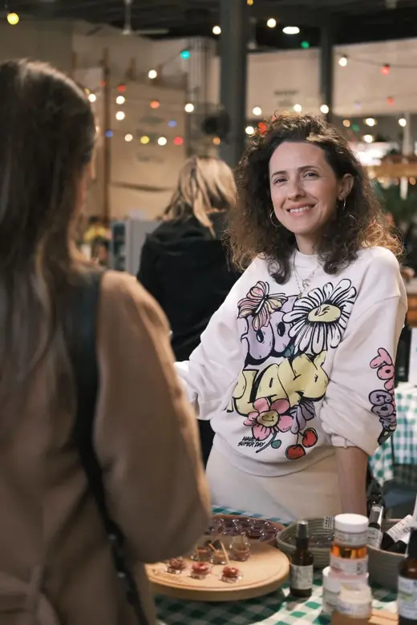

Rita’s story
Kernel was born when I was blessed by the birth of my baby boy. From that moment grew the need for a natural skincare for me and him.
Each face I met throughout my long experience in dermo cosmetics tells a story of skin longing to be heard, and I know that everyone is searching for a way to learn to love and care for their skin, hair and body.
My intention is that you fall in love with your skincare ritual, from the second you open each bottle. I invite you to experience a unique way to care for your skin, using products that combine some of the most opulent and luxurious ingredients, so that every step is a celebration for the senses. I hope you can escape into moments of pure serenity and sensory bliss: pure fragrances, silken textures and botanical magic, for you to savour.
When something is made by hand with love, you can feel it. Each bottle of Kernel harnesses that connection and is infused with love. Become inspired to care for your skin naturally, and never accept to put on your skin something you refuse to put in your mouth.
During my early career days, I developed a strong attachment to natural products. The line was born from a personal need: my newborn son had constant rash and redness on the diaper area and I couldn’t find any natural product to ease it. I researched all types of natural oils and began to work with raw materials and essential oils until I came up with a 100% natural yet effective formula for him. As a result, I ended up handcrafting a whole line of organic skincare.
“Kernel” is synonymous with the core of a fruit, the living heart of nature that I try to infuse in all of my products.

Your wellbeing
Skin is the place where inner and outer worlds meet. How you eat, sleep, move and feel all show up on your face, and caring for it can be one of the kindest daily acts you offer yourself.
A Kernel ritual is built to be slow and sensory: a few minutes, a beautiful texture, a natural scent, a pause in a busy day. Small gestures, repeated with love, are what change skin and mood over time.
Simple foundations: cleanse gently, protect from the sun every day, hydrate generously, and let the skin rest at night. Choose products you would be comfortable putting in your mouth.
Every skin has its own story. If you are unsure where to begin, book a 1-to-1 or virtual appointment at Kernel Clinic and we will build your routine together, or ask us to customize a product based on your needs.
Kind words
“After almost a month of using Kernel products, my skin is clear and glowing. I now feel super comfortable going out without any makeup on. Thank you for your constant help, I am finally in love with my skin.”Tracy DiabCustomer
“You made me love myself again, and this shows how you work with passion and love. Thank you for being truly natural and effective. My face is shining because of you and your products.”Beatrice AzziCustomer
“Kernel products are natural and free from toxins and nourish the skin deeply. From the first weeks, you can notice that the skin is clear and glowing.”Layal A.Electrical Engineer
“Kernel is synonymous with the core of a fruit: all the heart of nature that Rita Teklé wants to put in her products.”Noun MagazineMay 2017